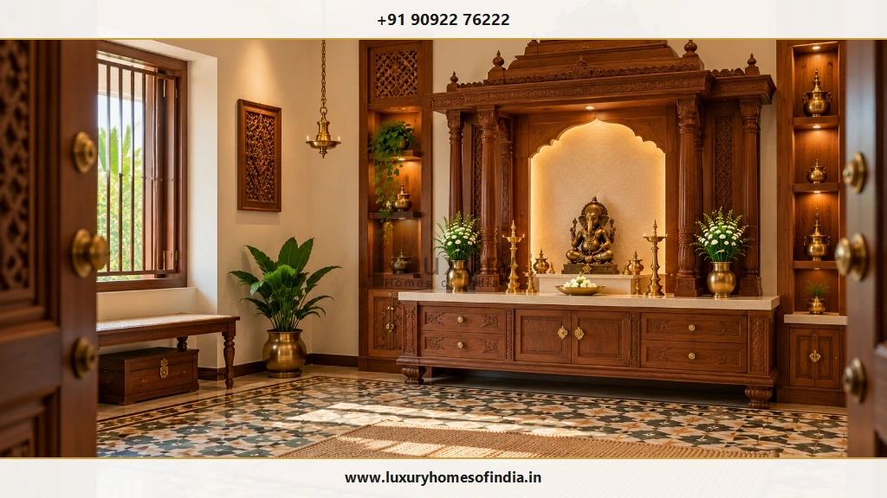
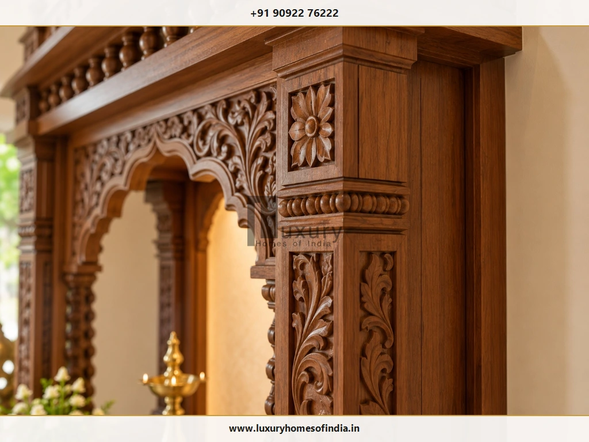
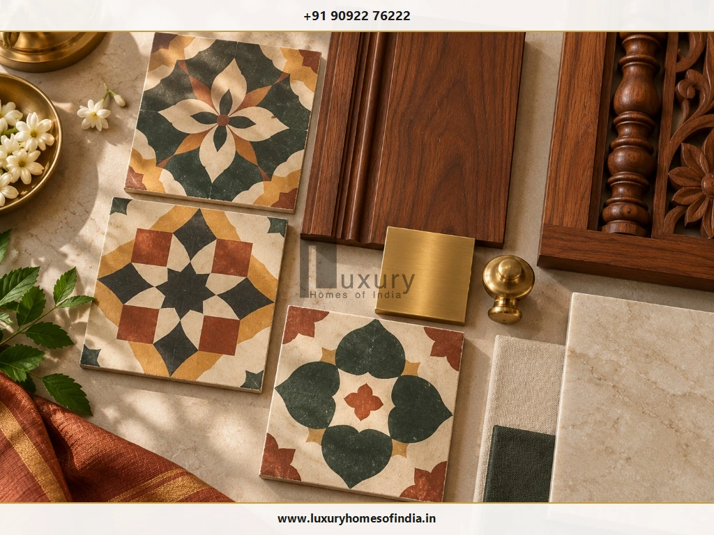
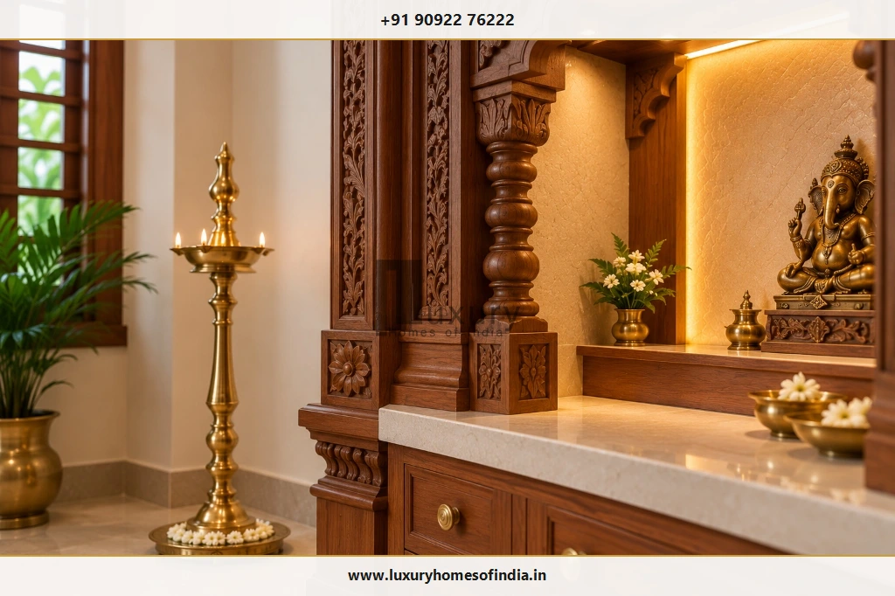
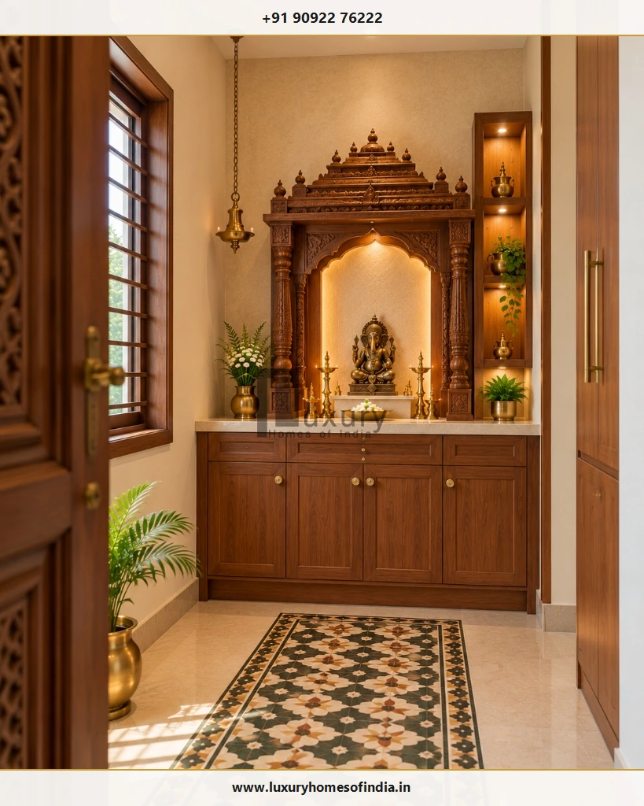

Chettinad-Style Pooja Room Design: Traditional Tamil Heritage for Modern Homes
A Chettinad-style pooja room brings the warmth and gravitas of Tamil architectural heritage into a home through hand-carved teakwood, handmade Athangudi patterned tiles, cast brass temple accents, and thoughtful spatial planning. Discover how to adapt this historic craftsmanship into contemporary villas, independent houses, and luxury apartments.

Executive Summary: Preserving Tamil Heritage in Modern Interiors
Rooted in the historic merchant mansions of the Chettinad region in Tamil Nadu, this design vernacular is celebrated worldwide for its mastery of timber joinery, rich natural stone, and handmade cement tiles. Rather than attempting to replicate an expansive 19th-century palace, modern homeowners can selectively reinterpret key architectural elements—such as a carved teakwood sanctum, a geometric Athangudi border, and solid brass temple hardware—into a functional, maintainable prayer room suited to urban life.
- Authentic Woodwork: Kiln-seasoned teakwood with classical lotus, arch, and pillar motifs.
- Artisanal Athangudi: Handcrafted cement tiles using traditional glass-mold casting.
- Cast Brass Accents: Hanging bells, temple diyas, and lion-head knockers.
- Modern Integration: Concealed LED coves, safe flame distances, and ventilated cabinetry.
What Defines a Chettinad-Style Pooja Room?
Chettinad architecture arose from the prosperous seafaring and banking Chettiar community across 70+ heritage villages in Sivaganga and Pudukkottai districts. The merchant homes (Mansions of Chettinad) synthesized indigenous Dravidian building science with global materials acquired through maritime trade—such as Burmese teak, Italian marble, and Belgian stained glass.
When translating this design ethos into a residential pooja room, six defining architectural characteristics emerge:
Carved Woodwork
Hand-sculpted temple arches, fluted pilasters, floral brackets, and ornamental cornices carved from solid seasoned timber.
Athangudi Tilework
Handmade geometric, floral, and diamond patterns cast with local clay, mineral pigments, and slow sun curing.
Cast Brass & Bronze
Substantial temple bells, heavy kuthuvilakku lamps, brass-capped thresholds, and ornamental floral studs.
Natural Stone Counters
Cool, stain-resistant Makrana marble, honed granite, or Cuddapah stone serving as the primary altar and offering platform.
Calm Lime Plaster
Ivory and warm egg-tempera wall finishes that provide a peaceful background and let rich woodwork stand out.
Disciplined Proportion
Carefully scaled elements that command visual attention without overcrowding the room's circulation space.
Historical Citation: For official architectural and anthropological context on regional settlement planning and craft traditions, refer to the UNESCO World Heritage Centre's Chettinad Tentative List Dossier.
Table of Contents
1. Traditional Chettinad Wooden Mandir Design
A carved wooden mandir serves as the spiritual and architectural crown of the sanctuary. In Chettinad architecture, timber structures were crafted not merely as decorative cabinets, but as miniature shrines (Vimanas) echoing the stone sanctums of South Indian temples.

Key Architectural Details
When commissioning an authentic Chettinad-style mandir, focus on these classical components:
- Carved Pillar Balusters (Thoongal): Fluted wooden columns with stepped bases and tapering shafts, topped by decorative capitals.
- Lotus Medallions (Padmam): Symmetrical eight-petal lotus carvings representing spiritual purity and cosmic order.
- Dentil Cornices & Bead Molding: Finely turned wooden bead borders running along the frieze beneath the upper gopuram roof.
- Curvilinear Arch Profiles: Multi-foil arches with gentle leaf-scroll apexes that frame the central deity gracefully.
- Tiered Deity Pedestal: Stepped wooden or stone platforms allowing multiple family idols to be viewed without visual obstruction.
Choosing Wood and Finishes for Chennai Climate
Authentic Chettinad homes favored reclaimed Burmese teak for its immense density and high concentration of natural silica. For modern construction in Chennai, seasoned CP Teak (Central Province) or Nilambur Teak provides equivalent structural stability and oil resistance. Avoid softwoods or commercial MDF/HDF in pooja rooms, as they expand and warp in Chennai's high seasonal humidity. Finish solid timber with open-pore polyurethane or natural beeswax to protect against incense soot while allowing the wood grain to breathe.
2. Athangudi Tiles for Chettinad Pooja Rooms
Manufactured exclusively by hereditary craftsmen in the village of Athangudi, these handmade tiles are celebrated for their vibrant mineral hues, satiny finish, and cooling feel under barefoot devotees.

Where Patterned Tiles Can Work
Because Athangudi tiles feature bold geometric or floral motifs, their spatial application requires architectural balance:
Carpet Feature Floor
Install patterned tiles in the central prayer area, framed by plain neutral marble or terracotta borders. Defines the prayer zone elegantly.
Perimeter Border Framing
Use a single row of floral border tiles along the base of light marble flooring to introduce regional heritage without visual overwhelm.
Decorative Niche Backsplash
Clad the recessed wall alcove behind the mandir in select Athangudi tiles to form a vibrant, traditional focal backdrop.
| Attribute | Authentic Handmade Athangudi Tiles | Factory Vitrified Heritage Replicas |
|---|---|---|
| Manufacturing Process | Handmade using glass molds, river sand, mineral pigments, and slow sun-curing. | Automated industrial pressing and digital inkjet printing on ceramic bodies. |
| Surface Luster & Aging | Develops a silky, rich natural patina over decades of barefoot use. | Uniform gloss or matte finish; does not change or age with time. |
| Porosity & Stain Resistance | Semi-porous; requires initial rice-husk polishing and oil-resistant sealing. | Near-zero water absorption (<0.05%); highly resistant to turmeric and oils. |
| Slip Resistance (R-Rating) | Natural grip when walked on barefoot; cool during hot Chennai summers. | Varies depending on glaze; polished variants can become slippery when wet. |
3. Carved Doors and Traditional Pooja Room Entrances
In traditional Chettinad mansions, the entrance threshold (Vaasapadi) is deeply sacred. Entering the prayer room should feel like crossing an intentional boundary from worldly domestic activity into quiet spiritual reverence.
A traditional entrance incorporates a two-shutter timber door (Irattai Kadhavu) with floral jaali cutouts or brass bell inserts that chime softly when the door is opened. A raised wooden threshold at floor level preserves sacred energy within the sanctum, prevents dust accumulation, and provides a designated surface for auspicious turmeric (manjal) and vermilion (kumkum) marks during festivals.
Ensure the door shutters swing inward smoothly and do not strike adjacent cabinetry, window frames, or standing oil lamps.
4. Brass Lamps and Traditional Decorative Accents
Solid cast brass and bronze accessories are inseparable from Tamil sacred architecture. In Chettinad homes, metals were chosen for their durability, acoustic resonance, and spiritual symbolism.

Kuthuvilakku Standing Lamps
Graceful multi-tiered cast brass oil lamps with Annapakshi (celestial bird) or lotus finials that cast a warm, radiant devotional glow.
Hanging Temple Bells (Thookku Mani)
Heavy brass bells suspended from ceiling chains that produce pure harmonic frequencies during daily morning and evening aartis.
Lamp Placement & Fire Safety Protocol
Position lit brass lamps strictly on heat-resistant stone pedestals, brass trays, or marble floors. Maintain at least 18 inches (450 mm) of vertical clearance between lamp flames and overhead wooden carvings or ceiling cornices. Never burn oil lamps inside closed wooden cabinets.
5. Colour Combinations for Chettinad-Style Pooja Rooms
A successful Chettinad prayer room uses colour with intention. Because hand-carved timber and patterned tiles carry significant visual weight, the surrounding walls and ceilings must remain restrained:
Rich dark timber against lime-plastered off-white walls. The classic high-contrast Chettinad palette.
Warm terracotta tones paired with natural CP Teak and polished brass. Earthy, inviting, and grounded.
Derived from authentic Athangudi floral patterns. Best balanced against neutral beige marble surfaces.
6. Lighting Ideas for a Traditional Pooja Room
Lighting in a Chettinad-style prayer room should celebrate the sculptural depth of wood carvings and the luster of brass without introducing harsh modern glare:
- Concealed Warm LED Channels (2700K – 3000K): Position indirect warm LED strip profiles behind the mandir arch to create a radiant spiritual back-glow.
- Focused Micro-Spotlights: Install narrow-beam (24°), high-CRI (90+) ceiling spots focused directly on central bronze idols.
- Natural Skylight & Transom Windows: Where the architectural layout permits, integrate high-level clerestory louvers to admit morning daylight and vent smoke.
- Concealed Driver Access: Ensure all LED power transformers are housed inside ventilated lower cabinets for easy servicing.
7. Planning a Chettinad-Style Pooja Room in a Chennai Home
Adapting heritage architecture to different home typologies requires adjusting the scale and density of traditional elements:

Independent Houses & Villas
Dedicate a full 50–90 sq ft room with carved double doors, full Athangudi flooring, and dedicated ceiling smoke exhaust.
Chennai Apartments
Opt for a compact floor-standing mandir with carved pillars and an Athangudi perimeter border tile inlay set into light marble.
Heritage Home Renovations
Prioritize chemical damp-proofing on older walls before fixing heavy timber shrines, and rewire electrical lines to modern safety codes.
8. Vastu Considerations for Chettinad-Style Pooja Rooms
Traditional Tamil residential architecture has always maintained strict alignment with Vastu Shastra and Manushyalaya Chandrika. In a Chettinad home, sacred orientation is vital:
- Optimal Direction: Position the sanctum in the North-East (Ishanya) quadrant. East and North directions are also widely favored.
- Devotee Stance: Design the layout so family members face East or North while performing daily worship.
- Clean Vertical Alignment: Ensure the pooja room is not located beneath a bathroom, toilet, or drainage duct on the upper floor.
- Sacred Threshold: Install a raised wooden threshold to demarcate the sacred space from general household traffic.
For complete directional analysis, read our comprehensive guide on Pooja Room Placement as per Vastu.
9. Storage and Practical Planning
An authentic Chettinad prayer room must remain orderly. Without dedicated storage, daily worship supplies quickly accumulate on the sacred altar:
- Shallow Aarti & Prasadam Pull-Out Ledges: Conceal heavy-duty pull-out teak ledges beneath the main altar counter to support offering plates and incense burners.
- Spill-Proof Oil Drawers: Line lower drawers with stainless steel or washable quartz inserts to store sesame oil and ghee bottles cleanly.
- Devotional Book Cabinetry: Provide dust-free upper compartments with fluted glass doors to safeguard religious scriptures.
- Brass Polishing Stash: Reserve a lower ventilated compartment for tamarind paste, Brasso, cotton wicks, and cleaning cloths.
10. Common Mistakes to Avoid
Visual Overload
Combining heavy wood carvings, vibrant all-over Athangudi tiles, painted ceilings, and excessive brass clutters the senses. Choose one focal hero.
Oversized Columns in Small Rooms
Heavy structural pillars in a compact apartment take up valuable floor area and restrict seating. Scale elements to ceiling height.
Inadequate Smoke Ventilation
Burning sambrani and camphor in an unventilated room coats teakwood carving in greasy black soot. Install mechanical exhaust.
Faux Tiles Without Slip Testing
Low-grade printed ceramic tiles can become dangerously slippery when water or oil spills during rituals. Insist on authentic or matte finishes.
11. What Determines the Cost of a Chettinad-Style Pooja Room?
Costs depend on the level of artisanal handcrafting, timber species, tile sourcing, and civil modifications. In Chennai, investments generally fall into three categories:
₹1.8L – ₹3.8L
Ideal for apartments and compact niches (20–35 sq ft).
- • Teakwood framed mandir unit
- • Athangudi border tile inlay
- • Granite altar platform & LED cove
- • Concealed soft-close lower storage
₹4.5L – ₹10L
Dedicated room (40–70 sq ft) in an independent house or villa.
- • Carved teak pillars & Vimana arch
- • Full authentic Athangudi patterned floor
- • Carved double-shutter entrance door
- • Brass hardware & dedicated exhaust duct
₹11L – ₹26L+
Grand architectural temple pavilion in luxury estates.
- • Hand-sculpted solid Burma Teak sanctum
- • Custom Athangudi glass-mold tile cast
- • Solid brass architectural inlays & gates
- • Integrated smart lighting & ventilation
Itemized BOQ Guidance
Always request an itemized Bill of Quantities (BOQ) separating timber species certification, carving labor per square foot, authentic tile transportation, stone sealing coats, and electrical installations before approving custom fabrication.
Frequently Asked Questions
Commission a Bespoke Chettinad Pooja Sanctuary
A Chettinad-style pooja room is more than a decorative interior—it is an enduring sanctuary of Tamil architectural heritage. Balancing authentic artisan teakwood carving and handmade Athangudi tiles with modern lighting, flame safety, and disciplined spatial planning creates a timeless sacred space for generations.
Luxury Homes of India (LHI) specializes in bespoke architectural planning, turnkey villa construction, and luxury interior execution across Chennai and Tamil Nadu. Contact our principal design team to discuss your sacred sanctuary requirements.